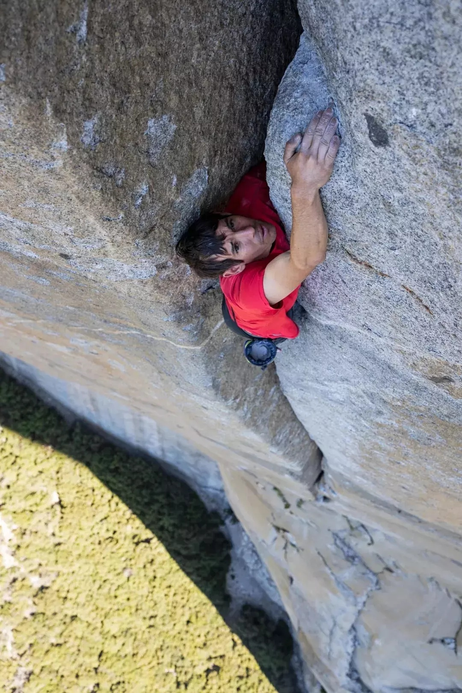
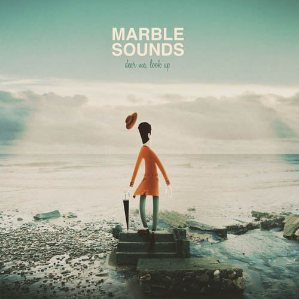

-

现在的糖都太聪明，里面充满了内容。普通到一颗薄荷糖都要分好多层，可咬可嚼，还要有夹心；就连最基本的牛轧糖也早就丧失了古早味，被各种玫瑰花瓣、薰衣草、抹茶……包裹着，咬下去果仁喷薄，但糖本身却几乎寻不见了。
豆瓣 「白兔糖」 @西瓜眼科 / 2019.6.3
mp3 -

意识到yuki已经死掉的那一刻，我一连说了十几个shit。难过却哭不出，像是被谁狠狠打懵了，完全不知该如何反应。
豆瓣 「无人知晓」 @ Mia / 2019.6.3
-

我希望大人听我说，我希望，无力抚养孩子的人，别再生了。我只记得暴力、侮辱或殴打，链子、管子、皮带，我听过的最温柔的一句话是“滚，婊子的儿子”、“滚，你这垃圾”。生活是一堆狗屎，不比我的鞋子更值钱。我住在这里的地狱，我像一堆腐烂的肉。生活是个婊子，我以为我们能做好人，被所有人爱，但上帝不希望我们这样，他要我们像地毯一样被踩在脚下。
「何以为家」@ 赞恩 / 2019.6.3
-

Alex的眼神纯净的如一瓢没有被污染过的水。 当他最后完成多年以来的梦想的那一刻，停不下来的笑着：“I feel like never smile so much before”.
豆瓣 「徒手攀岩」@ Bio Roy / 2019.5.30
-

每个人都是一条鱼，他们横跨大海，是为了相遇
「大鱼.海棠」 / 2019.6.2
-

只觉得她听似欢快，却好像藏着更多的无奈，像是绝望后的最后一场狂欢， 眼含热泪，尽情舞蹈，狂欢结束，一个人走回落寞，或者走向更深的孤独。 就像编曲的最后，又回到了极简的吉他， 在你以为还会有以后的时候，戛然而止， 决然的再没有以后了
网易云 「Ship In The Sand」 @哆哆哆米 / 2019.6.2
-

从此不敢看观音
「梁祝」 / 2019.6.1